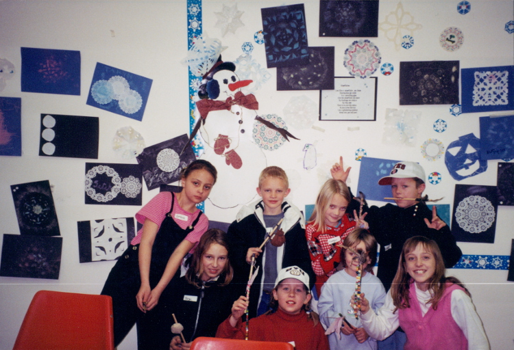
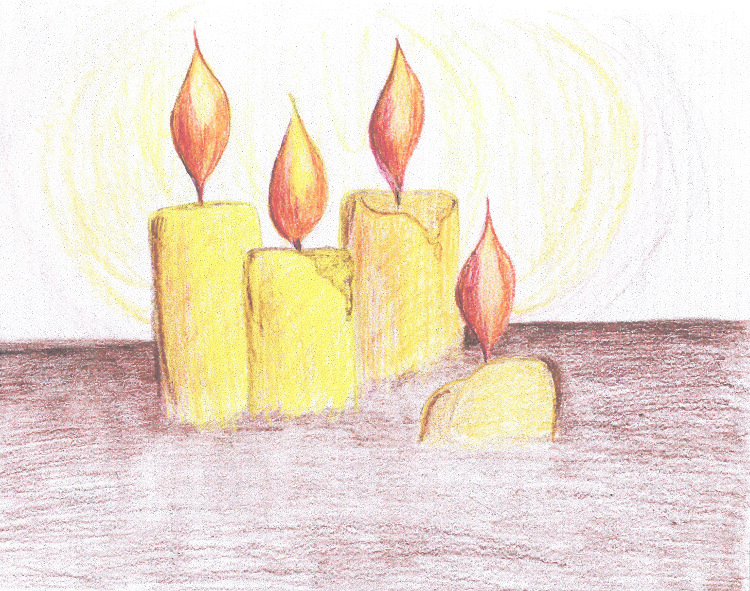

Activities
Candle lighting ceremony
Twice a year we have a candle lighting ceremony: one for Christmas and another for Memorial Day. Our families who have had a loss from death come together and one-by-one light a candle in memory of their loved ones, while saying who they were and something special about them. This has become a tradition for many families who make it a point to come participate at these significant times of the year.
|  |

|